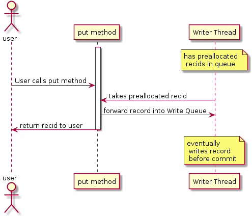

- java.lang.Object
-
- org.mapdb.EngineWrapper
-
- org.mapdb.AsyncWriteEngine
-
- All Implemented Interfaces:
- Engine
public class AsyncWriteEngine extends EngineWrapper implements Engine
Enginewrapper which provides asynchronous serialization and asynchronous write. This class takes an object instance, passes it to background writer thread (using Write Cache) where it is serialized and written to disk. Async write does not affect commit durability, write cache is flushed into disk on each commit. Modified records are held in small instance cache, until they are written into disk.This feature is enabled by default and can be disabled by calling
DBMaker.asyncWriteDisable(). Write Cache is flushed in regular intervals or when it becomes full. Flush interval is 100 ms by default and can be controlled byDBMaker.asyncFlushDelay(int). Increasing this interval may improve performance in scenarios where frequently modified items should be cached, typicallyBTreeMapimport where keys are presorted.Asynchronous write does not affect commit durability. Write Cache is flushed during each commit, rollback and close call. You may also flush Write Cache manually by using
clearCache()method. There is global lock which prevents record being updated while commit is in progress.This wrapper starts two threads named
MapDB writer #NandMapDB prealloc #N(where N is static counter). First thread is Async Writer, it takes modified records from Write Cache and writes them into store. Second thread is Recid Preallocator, finding emptyrecidstakes time so small stash is pre-allocated. Those two threads aredaemon, so they do not prevent JVM to exit.Asynchronous Writes have several advantages (especially for single threaded user). But there are two things user should be aware of:
Because data are serialized on back-ground thread, they need to be thread safe or better immutable. When you insert record into MapDB and modify it latter, this modification may happen before item was serialized and you may not be sure what version was persisted
Asynchronous writes have some overhead and introduce single bottle-neck. This usually not issue for single or two threadsr, but in multi-threaded environment it may decrease performance. So in truly concurrent environments with many updates (network servers, parallel computing ) you should disable Asynchronous Writes.
- Author:
- Jan Kotek
- See Also:
Engine,EngineWrapper
-
-
Nested Class Summary
-
Nested classes/interfaces inherited from class org.mapdb.EngineWrapper
EngineWrapper.ByteTransformEngine, EngineWrapper.DebugEngine, EngineWrapper.ImmutabilityCheckEngine, EngineWrapper.ReadOnlyEngine, EngineWrapper.SynchronizedEngineWrapper
-
-
Field Summary
Fields Modifier and Type Field and Description protected AtomicReference<CountDownLatch>actionprotected CountDownLatchactiveThreadsCountnumber of active threads running, used to await thread termination on closeprotected intasyncFlushDelayflush Write Queue every N millisecondsprotected booleancloseInProgressindicates thatclose()was called and background threads are being terminatedprotected ReentrantReadWriteLockcommitLockEach insert to Write Queue must hold read lock.protected ArrayBlockingQueue<Long>newRecidsQueue of pre-allocatedrecids.protected ThrowablethreadFailedExceptionIf background thread fails with exception, it is stored here, and rethrown to all callers.protected static ObjectTOMBSTONEused to signal that object was deletedprotected LongConcurrentHashMap<Fun.Tuple2<Object,Serializer>>writeCacheAssociatesrecidfrom Write Queue with record data and serializer.-
Fields inherited from interface org.mapdb.Engine
CLASS_INFO_RECID, LAST_RESERVED_RECID, NAME_DIR_RECID
-
-
Constructor Summary
Constructors Constructor and Description AsyncWriteEngine(Engine engine)AsyncWriteEngine(Engine engine, int _asyncFlushDelay, Executor executor)Construct new class and starts background threads.
-
Method Summary
Methods Modifier and Type Method and Description protected voidcheckState()checks that background threads are ready and throws exception if notvoidclearCache()clears any underlying cachevoidclose()Close store/cache.voidcommit()Makes all changes made since the previous commit/rollback permanent.voidcompact()<A> booleancompareAndSwap(long recid, A expectedOldValue, A newValue, Serializer<A> serializer)Updates existing record in atomic (Compare And Swap) manner.<A> voiddelete(long recid, Serializer<A> serializer)Remove existing record from store/cache<A> Aget(long recid, Serializer<A> serializer)Get existing record.<A> longput(A value, Serializer<A> serializer)Insert new record.voidrollback()Undoes all changes made in the current transaction.protected voidrunPrealloc()runs on background thread, preallocates recids and puts them into Prealloc Queueprotected voidrunWriter()runs on background thread.protected voidstartThreads(Executor executor)Starts background threads.<A> voidupdate(long recid, A value, Serializer<A> serializer)Update existing record with new value.-
Methods inherited from class org.mapdb.EngineWrapper
checkClosed, getWrappedEngine, isClosed, isReadOnly
-
Methods inherited from class java.lang.Object
clone, equals, finalize, getClass, hashCode, notify, notifyAll, toString, wait, wait, wait
-
Methods inherited from interface org.mapdb.Engine
isClosed, isReadOnly
-
-
-
-
Field Detail
-
TOMBSTONE
protected static final Object TOMBSTONE
used to signal that object was deleted
-
newRecids
protected final ArrayBlockingQueue<Long> newRecids
Queue of pre-allocated
recids. Filled byMapDB preallocthread and consumed byput(Object, Serializer)method
-
writeCache
protected final LongConcurrentHashMap<Fun.Tuple2<Object,Serializer>> writeCache
Associates
recidfrom Write Queue with record data and serializer.
-
commitLock
protected final ReentrantReadWriteLock commitLock
Each insert to Write Queue must hold read lock. Commit, rollback and close operations must hold write lock
-
activeThreadsCount
protected final CountDownLatch activeThreadsCount
number of active threads running, used to await thread termination on close
-
threadFailedException
protected volatile Throwable threadFailedException
If background thread fails with exception, it is stored here, and rethrown to all callers.
-
closeInProgress
protected volatile boolean closeInProgress
indicates that
close()was called and background threads are being terminated
-
asyncFlushDelay
protected final int asyncFlushDelay
flush Write Queue every N milliseconds
-
action
protected final AtomicReference<CountDownLatch> action
-
-
Constructor Detail
-
AsyncWriteEngine
public AsyncWriteEngine(Engine engine, int _asyncFlushDelay, Executor executor)
Construct new class and starts background threads. User may provide executor in which background tasks will be executed, otherwise MapDB starts two daemon threads.
- Parameters:
engine- which stores data._asyncFlushDelay- flush Write Queue every N millisecondsexecutor- optional executor to run tasks. If null daemon threads will be created
-
AsyncWriteEngine
public AsyncWriteEngine(Engine engine)
-
-
Method Detail
-
startThreads
protected void startThreads(Executor executor)
Starts background threads. You may override this if you wish to start thread different way
- Parameters:
executor- optional executor to run tasks, if null deamon threads will be created
-
runPrealloc
protected void runPrealloc()
runs on background thread, preallocates recids and puts them into Prealloc Queue
-
runWriter
protected void runWriter()
runs on background thread. Takes records from Write Queue, serializes and writes them.
-
checkState
protected void checkState()
checks that background threads are ready and throws exception if not
-
put
public <A> long put(A value, Serializer<A> serializer)Insert new record.
Recids are managed by underlying Engine. Finding free or allocating new recids may take some time, so for this reason recids are preallocated by Prealloc Thread and stored in queue. This method just takes preallocated recid from queue with minimal delay.
Newly inserted records are not written synchronously, but forwarded to background Writer Thread via queue.

- Specified by:
putin interfaceEngine- Overrides:
putin classEngineWrapper- Parameters:
value- records to be addedserializer- used to convert record into/from binary form- Returns:
- recid (record identifier) under which record is stored.
-
get
public <A> A get(long recid, Serializer<A> serializer)Get existing record.
Recid must be a number returned by ‘put’ method. Behaviour for invalid recid (random number or already deleted record) is not defined, typically it returns null or throws ‘EndOfFileException’This method first looks up into Write Cache if record is not currently being written. If not it continues as usually
- Specified by:
getin interfaceEngine- Overrides:
getin classEngineWrapper- Parameters:
recid- (record identifier) under which record was persistedserializer- used to deserialize record from binary form- Returns:
- record matching given recid, or null if record is not found under given recid.
-
update
public <A> void update(long recid, A value, Serializer<A> serializer)Update existing record with new value.
Recid must be a number returned by ‘put’ method. Behaviour for invalid recid (random number or already deleted record) is not defined, typically it throws ‘EndOfFileException’, but it may also corrupt store.This methods forwards record into Writer Thread and returns asynchronously.

- Specified by:
updatein interfaceEngine- Overrides:
updatein classEngineWrapper- Parameters:
recid- (record identifier) under which record was persisted.value- new record value to be storedserializer- used to serialize record into binary form
-
compareAndSwap
public <A> boolean compareAndSwap(long recid, A expectedOldValue, A newValue, Serializer<A> serializer)Updates existing record in atomic (Compare And Swap) manner. Value is modified only if old value matches expected value. There are three ways to match values, MapDB may use any of them:
- Equality check
oldValue==expectedOldValuewhen old value is found in instance cache - Deserializing
oldValueusingserializerand checkingoldValue.equals(expectedOldValue) - Serializing
expectedOldValueusingserializerand comparing binary array with already serializedoldValue
This method first looks up Write Cache if record is not currently being written. Successful modifications are forwarded to Write Thread and method returns asynchronously. Asynchronicity does not affect atomicity.
- Specified by:
compareAndSwapin interfaceEngine- Overrides:
compareAndSwapin classEngineWrapper- Parameters:
recid- (record identifier) under which record was persisted.expectedOldValue- old value to be compared with existing recordnewValue- to be written if values are matchingserializer- used to serialize record into binary form- Returns:
- true if values matched and newValue was written
- Equality check
-
delete
public <A> void delete(long recid, Serializer<A> serializer)Remove existing record from store/cache
Recid must be a number returned by ‘put’ method. Behaviour for invalid recid (random number or already deleted record) is not defined, typically it throws ‘EndOfFileException’, but it may also corrupt store.
This method places ‘tombstone’ into Write Queue so record is eventually deleted asynchronously. However record is visible as deleted immediately.
- Specified by:
deletein interfaceEngine- Overrides:
deletein classEngineWrapper- Parameters:
recid- (record identifier) under which was record persistedserializer- which may be used in some circumstances to deserialize and store old object
-
close
public void close()
Close store/cache. This method must be called before JVM exits to flush all caches and prevent store corruption. Also it releases resources used by MapDB (disk, memory..).
Engine can no longer be used after this method was called. If Engine is used after closing, it may throw any exception includingNullPointerExceptionThere is an configuration optionDBMaker.closeOnJvmShutdown()which uses shutdown hook to automatically close Engine when JVM shutdowns.This method blocks until Write Queue is flushed and Writer Thread writes all records and finishes. When this method was called
closeInProgressis set and no record can be modified.- Specified by:
closein interfaceEngine- Overrides:
closein classEngineWrapper
-
commit
public void commit()
Makes all changes made since the previous commit/rollback permanent. In transactional mode (on by default) it means creating journal file and replaying it to storage. In other modes it may flush disk caches or do nothing at all (check your config options)
This method blocks until Write Queue is flushed. All put/update/delete methods are blocked while commit is in progress (via global ReadWrite Commit Lock). After this method returns, commit lock is released and other operations may continue
- Specified by:
commitin interfaceEngine- Overrides:
commitin classEngineWrapper
-
rollback
public void rollback()
Undoes all changes made in the current transaction. If transactions are disabled it throws
UnsupportedOperationException.This method blocks until Write Queue is cleared. All put/update/delete methods are blocked while rollback is in progress (via global ReadWrite Commit Lock). After this method returns, commit lock is released and other operations may continue
- Specified by:
rollbackin interfaceEngine- Overrides:
rollbackin classEngineWrapper
-
compact
public void compact()
This method blocks all put/update/delete operations until it finishes (via global ReadWrite Commit Lock).
- Specified by:
compactin interfaceEngine- Overrides:
compactin classEngineWrapper
-
clearCache
public void clearCache()
clears any underlying cache
This method blocks until Write Queue is empty (written into disk). It also blocks any put/update/delete operations until it finishes (via global ReadWrite Commit Lock).
- Specified by:
clearCachein interfaceEngine- Overrides:
clearCachein classEngineWrapper
-
-